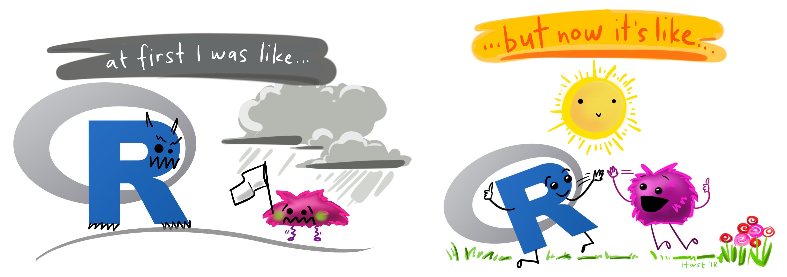
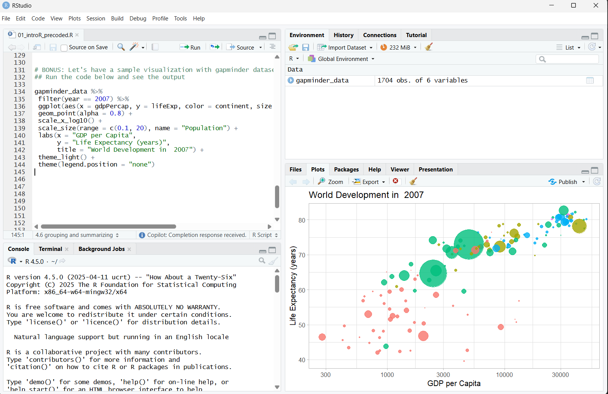
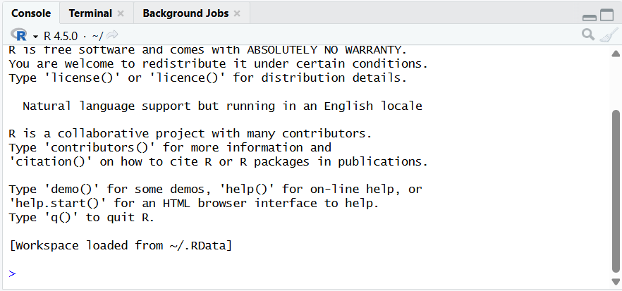
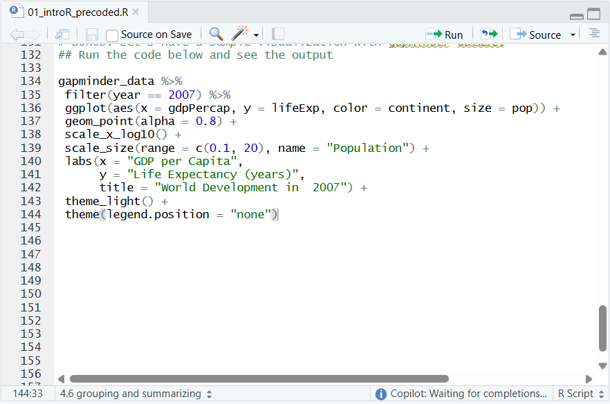
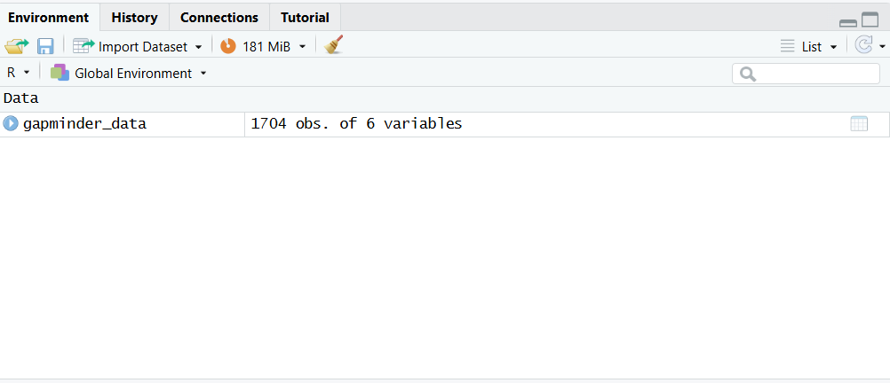
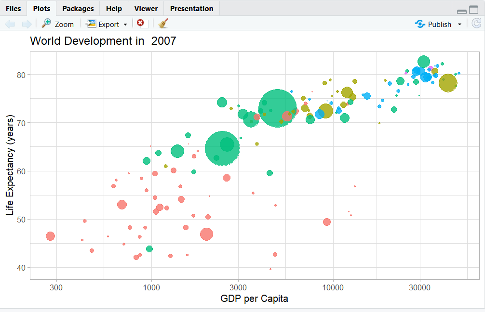

.
Overview
- What is R?
- Installing R and RStudio
- R objects
- Packages and help pages
- R notation

Illustration adopted from Allison Horst
What is R?
So … what is R programming?
- R is a language + an eco-system
- a free and open-source programming language
- statistical analysis, graphics representation, and reporting
- an eco-system of many high-quality user-contributed libraries/packages
- freely available under the GNU General Public License, and pre-compiled binary versions are provided for various operating systems (e.g., Linux, Windows, and Mac)
- Before, R is known for its statistical analysis toolkits
- Nowadays R is capable of many other tasks
- tools that facilitates the whole data analysis workflow
- tools for web technology
- even this presentation is made in R!
- also our class website is entirely built in R!
The History of R programming
Uses of R programming
Source: DataFlair
Why R for future economists and analysts?
Reading assingment
Why should economist use R? A peek at my journey! by Hany Abdel-Latif
“R is a powerful, flexible, and free software environment that allows economists to analyze data, estimate models, and visualize results in a reproducible way.”
Installing R and RStudio
Installing R and RStudio on Windows
Installing R and RStudio on Mac/MacOS
RStudio interface

RStudio interface: Console window
- located in the bottom-left
- where you often will find the output of your coding and computations

RStudio interface: Source window
- located in the top-left
- source can be understood as any type of file, e.g. data, programming code, notes, etc.
- edit script, text, markdown, website, others

RStudio interface: Environment/ History/ Connections/ Tutorials
- located in the top-right
- Environment: shows saved R objects
- History: computation you run in the console will be stored
- Connections: allows the user to tab into external databases directly
- Tutorials: additional materials to learn R and RStudio

RStudio interface: Files/ Plots/ Packages/ Help/ Viewer
- located in the bottom-right

R objects and packages
R Objects
You can consider R objects as saving information
e.g., text, number, matrix, vector, dataframe
In another words everything in R is an object
R objects
- Objects in R are assigned a value using ←
R packages
Functions
R functions
- R comes with built-in functions
- For example, you can round a number with
roundfunction
Arguments
- data that you pass into the function is called the function’s argument
- Linking functions together, R resolves them from innermost operation to the outermost

Arguments
- use
argsfunctions if you are not sure with the argument’s name in a function - some
argumentsare optional- they come with a default value
- e.g.,
digitsis already set to0
Sample with replacements
sample(x, size, replace = FALSE, prob = NULL)samplewill returnsizeelements from the vectorsampletakes two arguments: a vector namedxand a number namedsize
Sample with replacements
- by default
samplebuilds a sample without replacement replace = TRUEcauses sample to sample with replacement
Function constructor
- functions in R has three basic parts: name, body of code, and set of arguments
Function constructor
functionwill build a function between braces
Function constructor

R notation
Selecting values
- R has notation for selecting values from R objects
data[row, column]
Selecting values
- R has notation for selecting values from R objects
data[row, column]
Selecting values
- R has notation for selecting values from R objects
data[row, column]
Econ 148: Analytical and statistical packages for economics 1